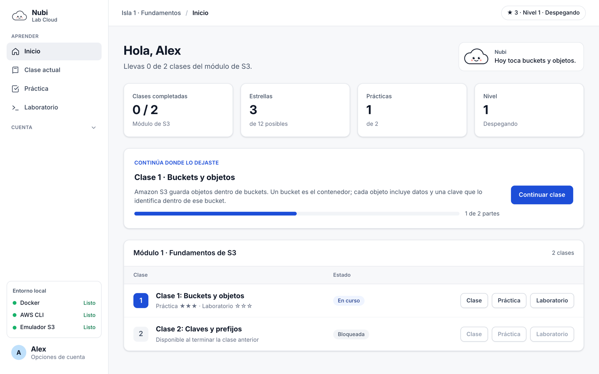
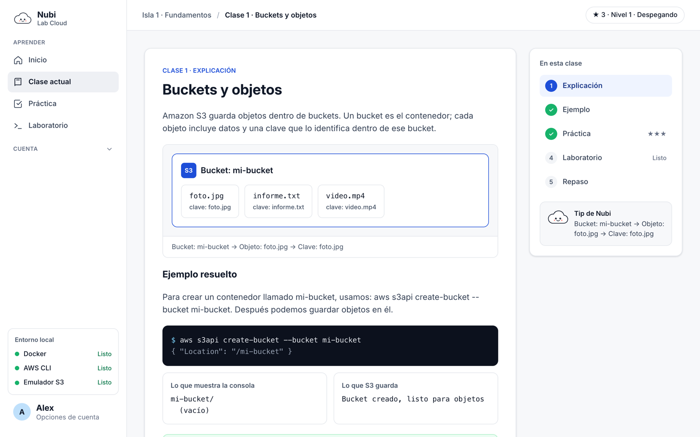
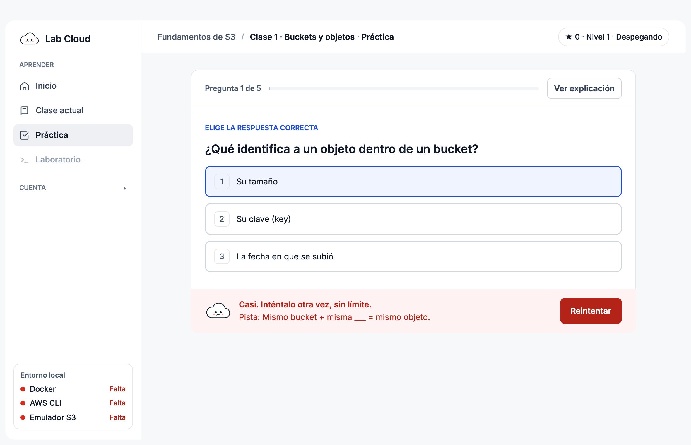
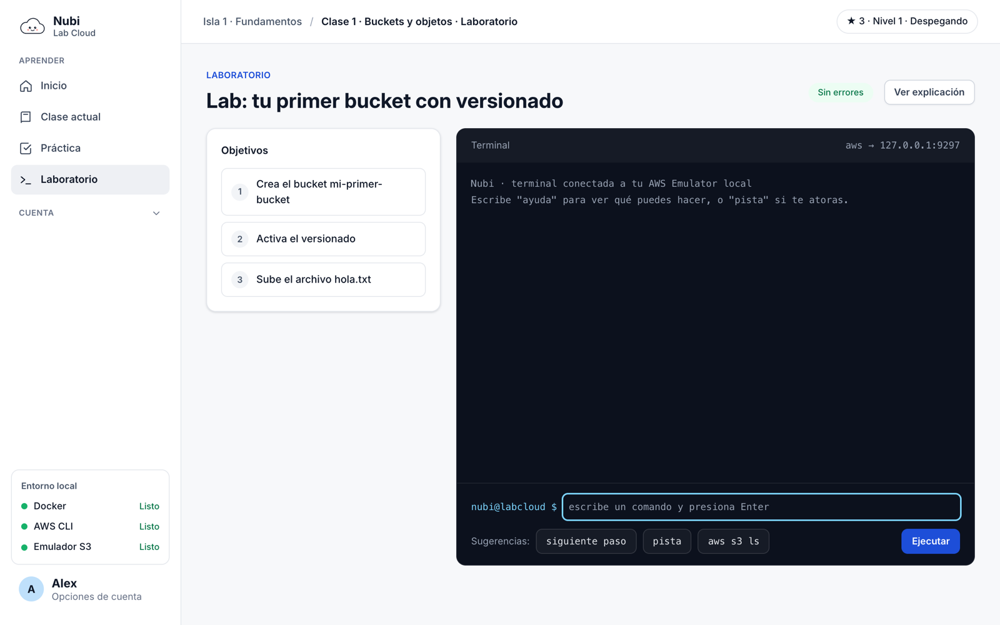

Aprende AWS en tu equipo.
Clases, ejercicios y una terminal conectada a un emulador local. Sin cuenta de AWS.

Cada clase sigue el mismo camino.
Primero entiendes la idea, luego la practicas y al final la aplicas con comandos reales.
Explicación con ejemplo
Cada clase explica un concepto con un ejemplo resuelto. Nubi te deja una pista para recordarlo.

Práctica con respuesta inmediata
Opción múltiple, comandos, ordenar pasos y relacionar conceptos. Si fallas, recibes una pista y lo intentas otra vez.

Un perfil por persona
Varias personas pueden usar la misma computadora. Cada perfil guarda su propio progreso y sus estrellas.

Ajustes a tu medida
Reduce las animaciones desde la app. La preferencia de movimiento reducido de tu sistema siempre se respeta.


Prueba comandos reales.
La terminal del laboratorio ejecuta la AWS CLI contra AWS Emulator en tu equipo. La app revisa cada objetivo mientras avanzas. Sin tarjeta, sin facturas sorpresa.
Hecho para aprender de verdad.
Todo en español
Explicaciones, pistas y mensajes pensados para quien empieza en la nube, no traducidos a la carrera.
100% local
El emulador corre en Docker en tu equipo. Tus recursos viven en memoria.
Estrellas y niveles
Gana estrellas por práctica y laboratorio. Termina los juegos de una clase para abrir su laboratorio.
Nunca te quedas atorado
Escribe "pista" en la terminal o abre la explicación sin perder tu avance.
Contenido abierto
Las lecciones son archivos TOML. Agrega una clase sin tocar código.
[[exercises]] type = "command" prompt = "Lista tus buckets" answers = ["aws s3 ls"]
Descarga Nubi.
Gratis y de código abierto. Al abrir, la app revisa tu entorno y te ofrece un botón para instalar o iniciar lo que falte.
macOS
Apple Silicon e Intel, macOS 11 o superior.
brew tap leoglez10/nubi https://github.com/Leoglez10/nubi && brew install --cask leoglez10/nubi/nubi
Windows
Windows 10 u 11, 64 bits. Instalador .exe.
Tu sistema puede avisar que la app no está firmada
Todavía no tenemos certificados de firma. En macOS, intenta abrirla una vez y luego, en Ajustes del Sistema, Privacidad y seguridad, elige Abrir igualmente. En Windows, en SmartScreen elige Más información y luego Ejecutar de todas formas.
La app inicia AWS Emulator con la telemetría desactivada y solo en 127.0.0.1.
O compílalo tú.
Necesitas Rust estable, Node.js 24, Docker, AWS CLI v2 y los requisitos de Tauri de tu sistema (en Linux, WebKitGTK 4.1).
-
Clona el repositorio
git clone https://github.com/Leoglez10/nubi.git cd nubi -
Instala la interfaz
npm ci --prefix ui -
Abre la app
ui/node_modules/.bin/tauri dev -
Inicia el emulador
Desde la app, o a mano. Escucha en 127.0.0.1:9297.
scripts/emulator.sh start
S3 hoy. Más servicios después.
El módulo de fundamentos de S3 ya está disponible. Los siguientes servicios entran al mapa de la nube.
Nubi te espera en la primera clase.
Código abierto en GitHub. Reporta ideas o errores en los issues.